--点击左上蓝字“高小猫”关注我---
微信号：gaoxiaomao88
--点击左上蓝字“高小猫”关注我---
微信号：gaoxiaomao88
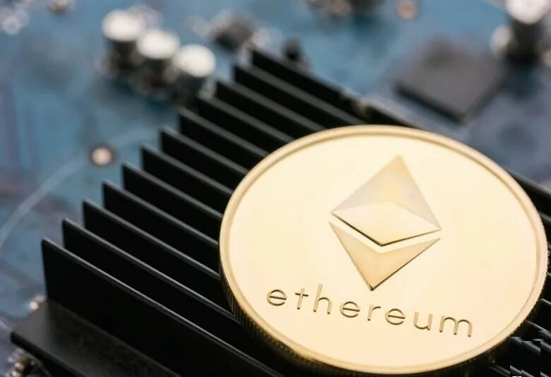
最近准备在投资群里做一期分享，谈谈我对于以太坊挖矿的一些分析和看法。
做好了ppt，顺便也写一篇文章把内容整理出来，方便以后自己回顾，也分享给需要的朋友。
以下是我准备分享的内容，然后ppt之间会加一些文字，方便大家阅读。
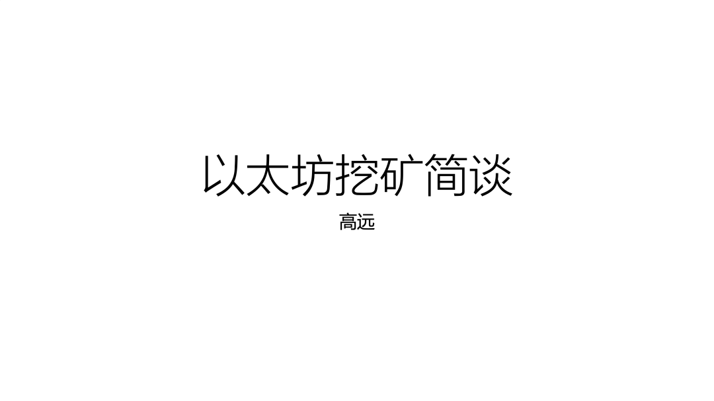
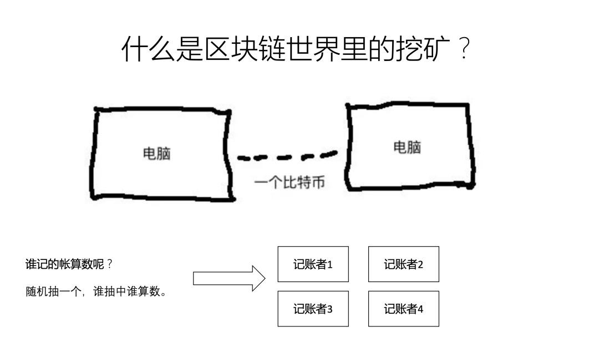
当我们想要在区块链上转账的时候，需要有一些人帮我们把转账的这个事情记录下来。
那么谁记的帐算数呢？通常采用的方法是随机抽一个，谁抽中谁记的帐就算数。
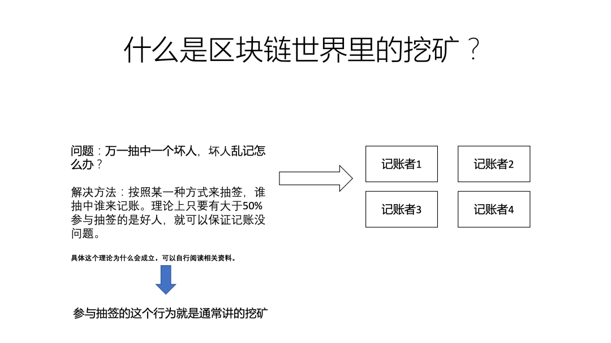
那问题就来了，万一抽中一个坏人怎么办呢？
设计区块链的中本聪早就想到了这个问题，他想出来一个解决方案。只要保证记账的人里面大于51%的人都是好人，那最终就可以保证所有的帐都是正确记录的。
那参与记账有什么好处呢？
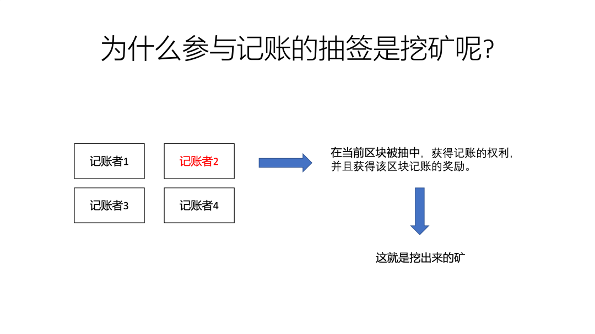
记账的好处就是可以获得记账的奖励。
以太坊是9-13秒出一个区块，每个区块里有一段时间内的所有交易记录，交给抽中签的人来打包，记账。谁来记账，就可以获得这个区块对应的奖励。目前以太坊每个区块的奖励为2ETH。
这些记账者也就是俗称的矿工。
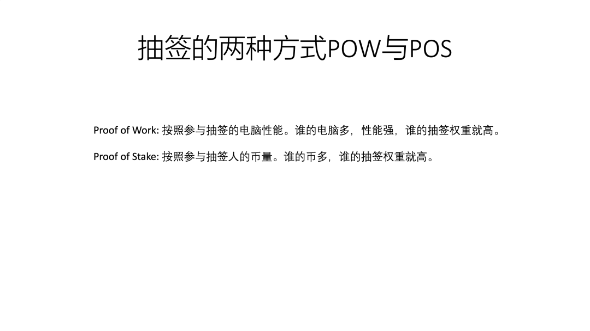
目前主流的区块链的有两种模式，分别是POW和POS。
他们其实对应了不同的抽签权重模式。POW是根据大家提供的算力大小来抽签。对于以太坊来说，限制大家仅能提供显卡的算力。所以以太坊的挖矿必须要显卡才能挖。
而以太坊之后计划转为POS来挖矿。这个时候就不是根据算力，而是根据大家记账时抵押的币数来分配权重了。到那时候所有的显卡矿机都会失效，只能转去挖别的币了。
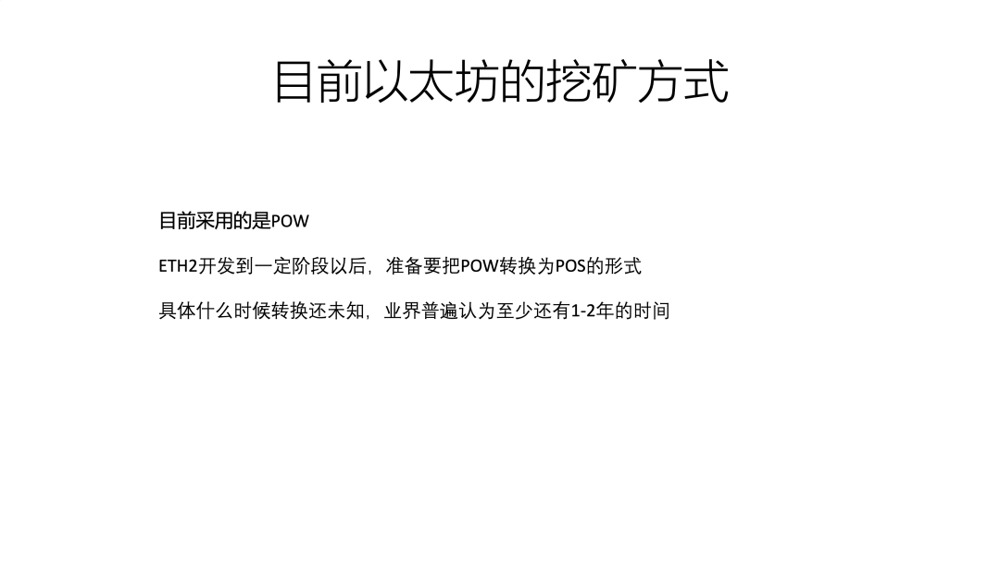
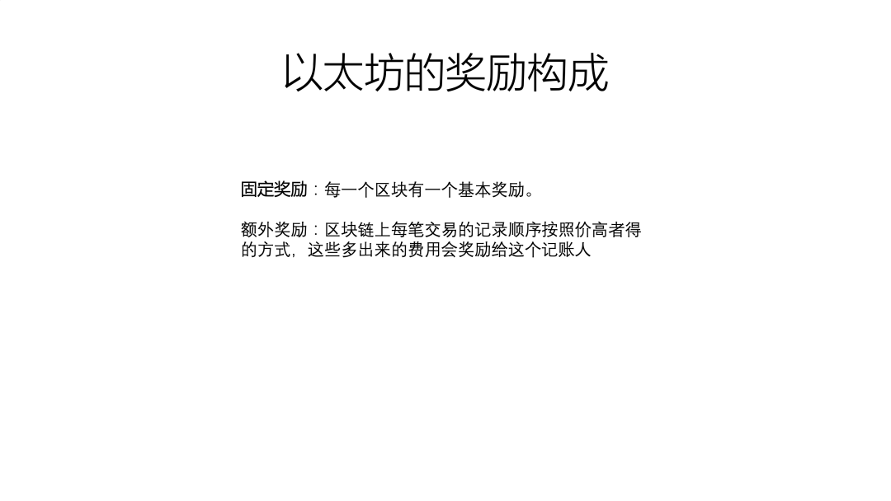
以太坊对于记账者（矿工）的奖励，除了固定的区块奖励，还有额外奖励。这是当以太坊链出现拥堵的时候，gas fee高的那一部分会分配给对应的矿工。
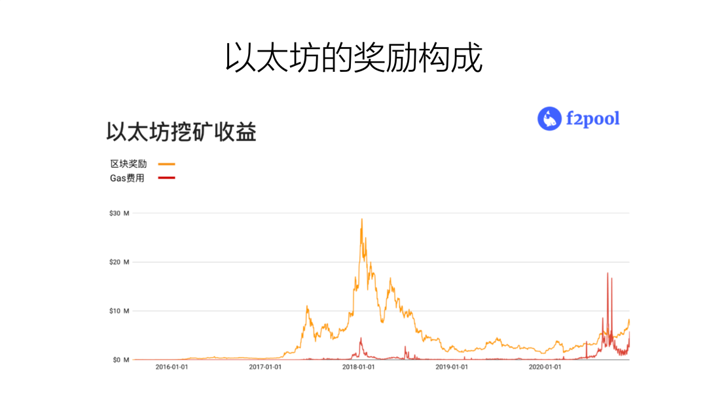
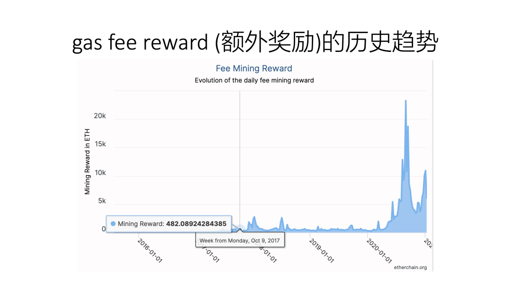
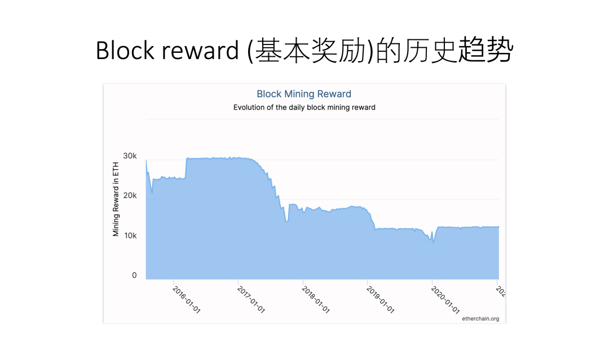
上面是过去几年以太坊上挖矿奖励的构成，可以看到区块奖励逐步在减少，但是由于以太坊上应用越来越多，因此上面的交易费用越来越高，导致支付给矿工的额外费用越来越多。
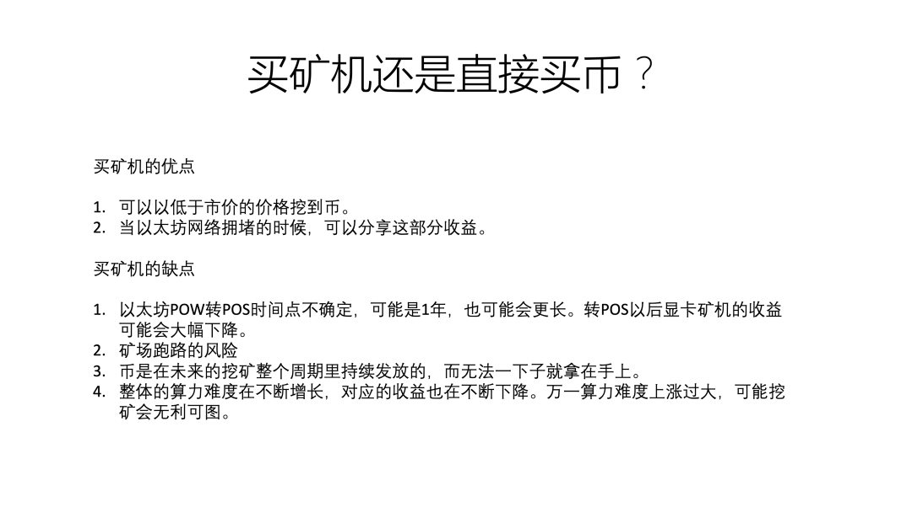
上面这个slide是我总结的买以太坊矿机来挖矿，与直接购买以太坊然后囤住的优劣对比。
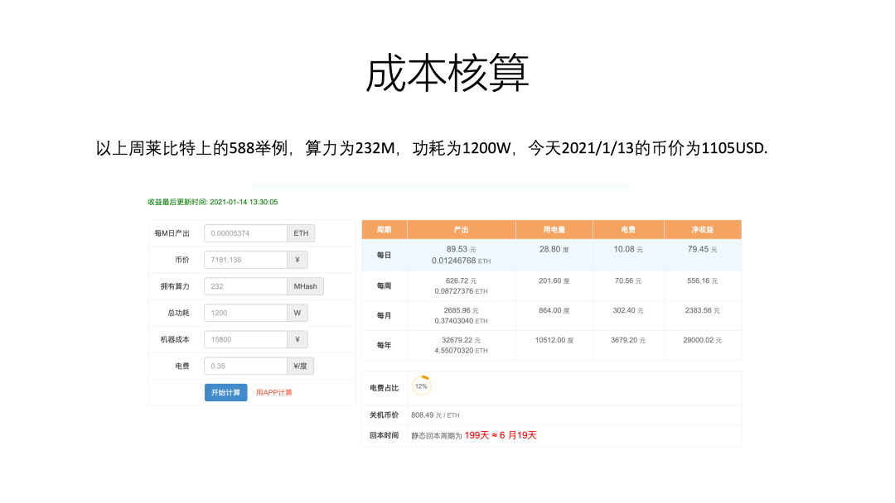
根据上面这个slide的核算，可以看到当前以太坊的静态回本时间大约为6个月。
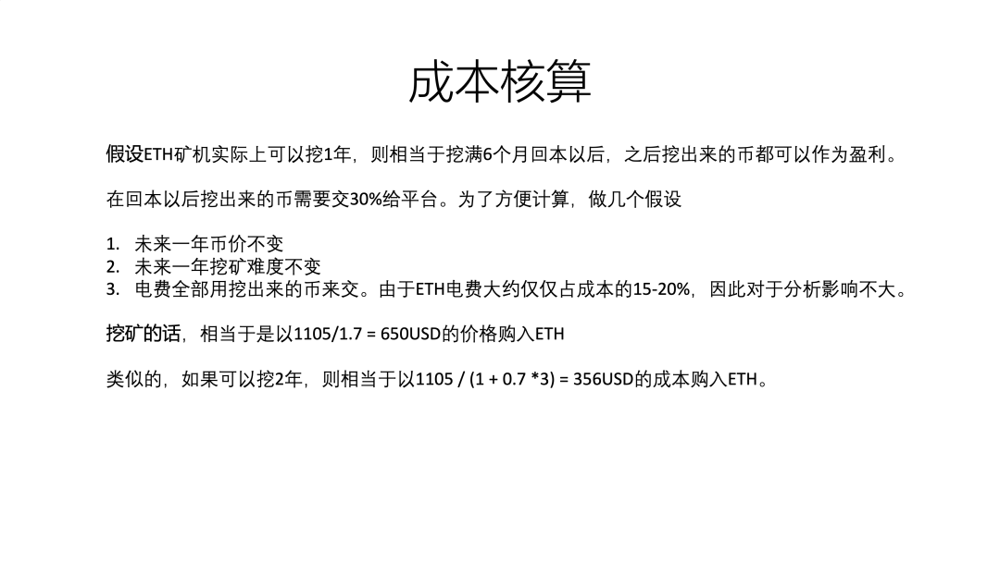
假设挖矿可以持续一年，则大约相当于以当前一半的币价购买以太坊。
如果可以持续两年，则相当于以30%的价格购买以太坊。
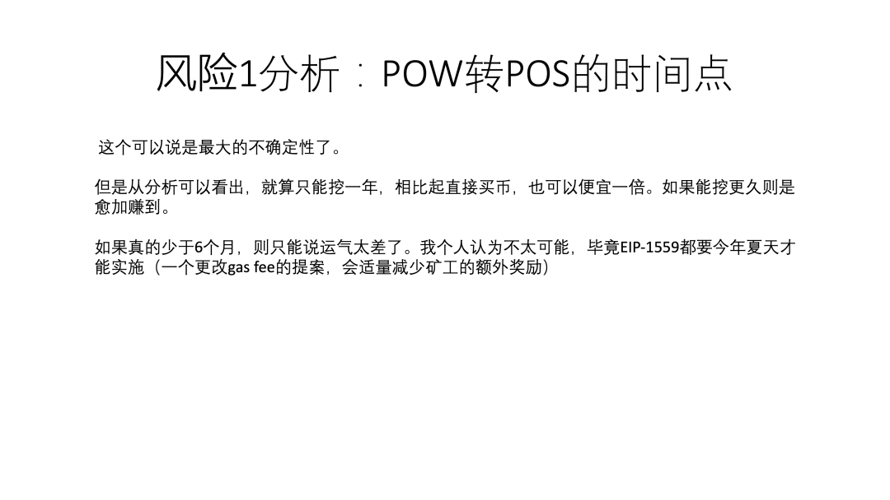
这个slide分析了POW转POS的风险。大家还可以去参考EIP-1559和EIP-2878下面的讨论。可以看到社区里大部分人认为POW至少还会持续一年，不然也没必要还要费心提这些削减矿工收益的提案了。
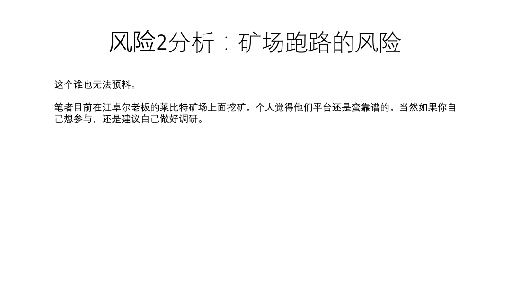
矿场跑路的风险永远都在。我个人觉得莱比特平台还算靠谱。当然各位还是要自己做好尽职调研。
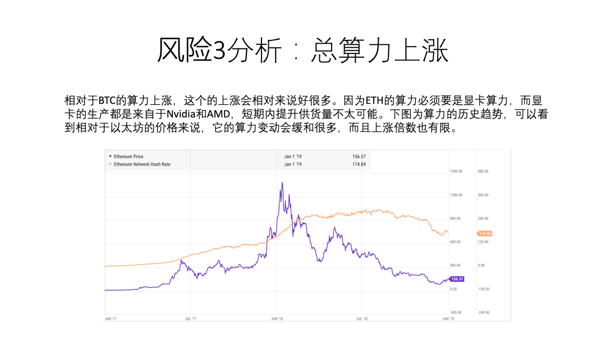
第三个风险是算力的上涨，不过我觉得这个不用特别担心。
这一期就到这里，如果大家还有问题的话欢迎留言讨论。
谢谢。